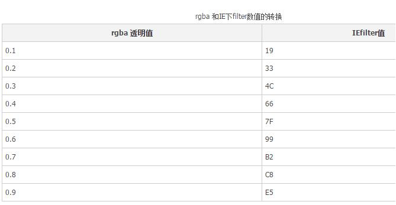

background: rgba(0,0,0,.3);/*支持rgba的浏览器*/
filter:progid:DXImageTransform.Microsoft.gradient(startColorstr=#7F000000,endColorstr=#7F000000); /*IE8支持*/
当上一行的透明度不起作用的时候执行。这句话的意思本来是用来做渐变的，但是这个地方不需要渐变。所以两个颜色都设置成了相同的颜色。
解释下#7f000000，第一部分是#号后面的7f。是rgba透明度0.5的IEfilter值。从0.1到0.9每个数字对应一个IEfilter值。对应关系如下：
